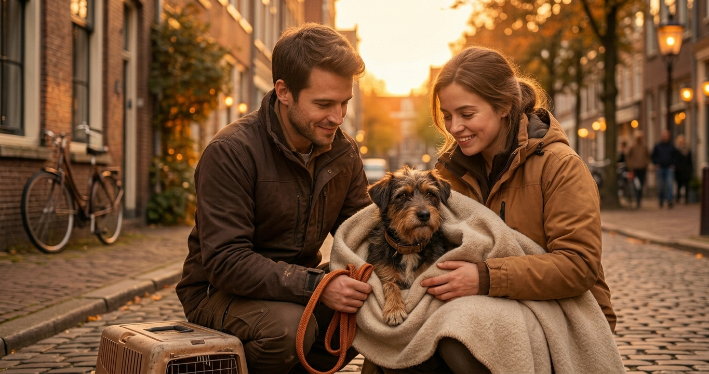
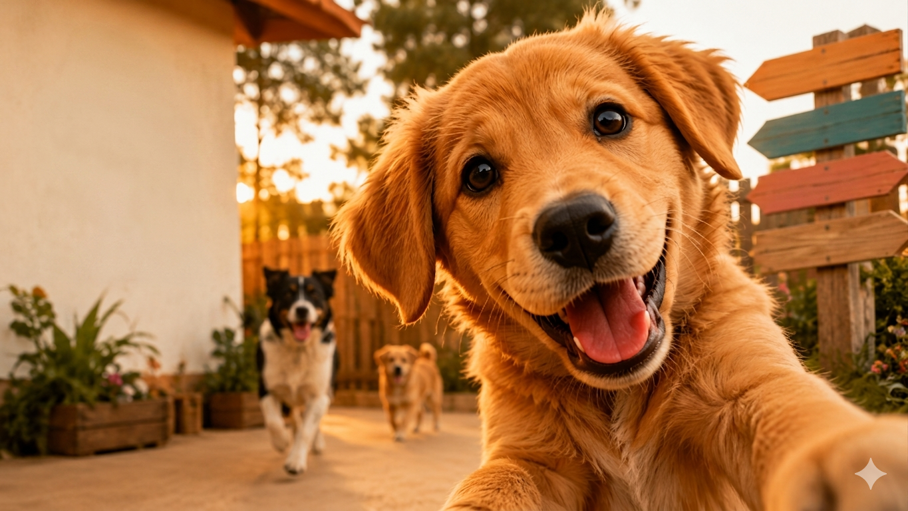
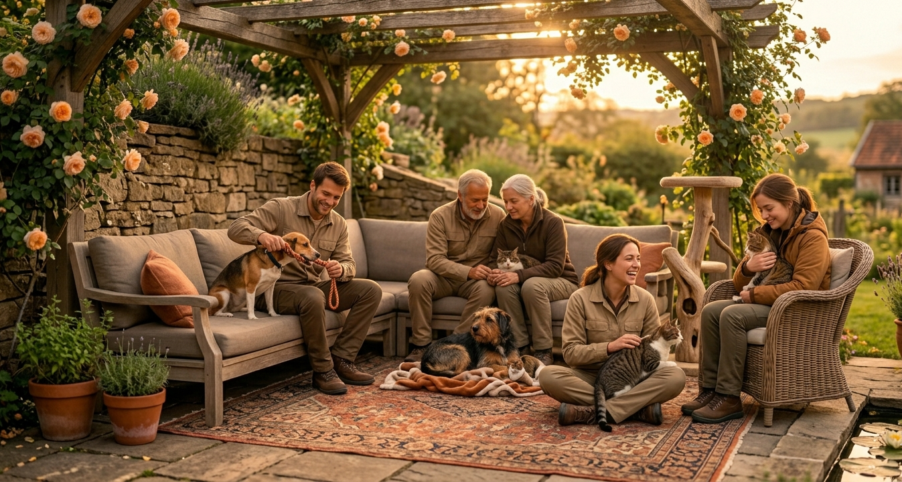
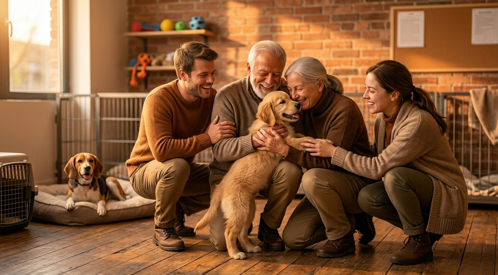
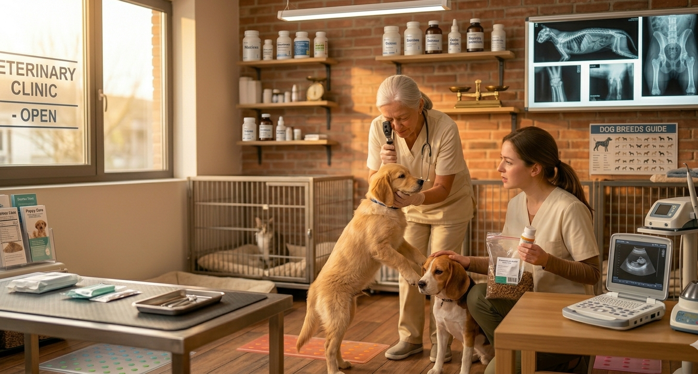
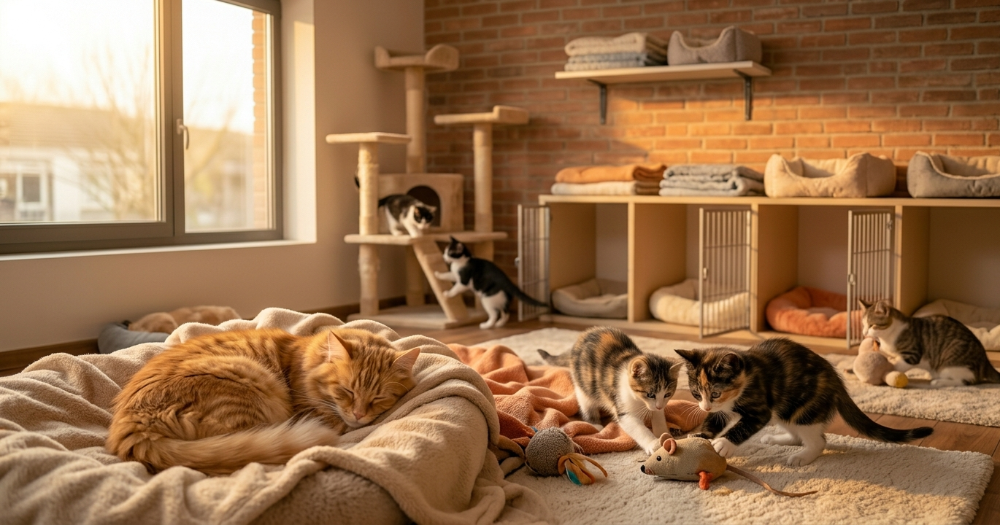
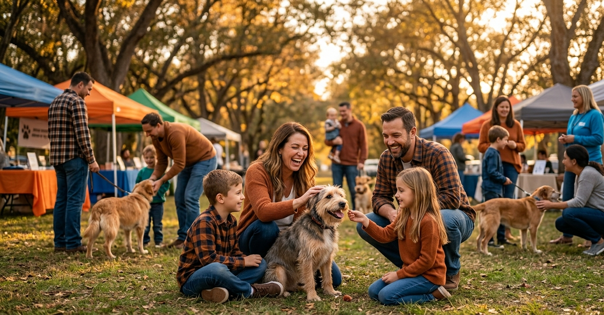
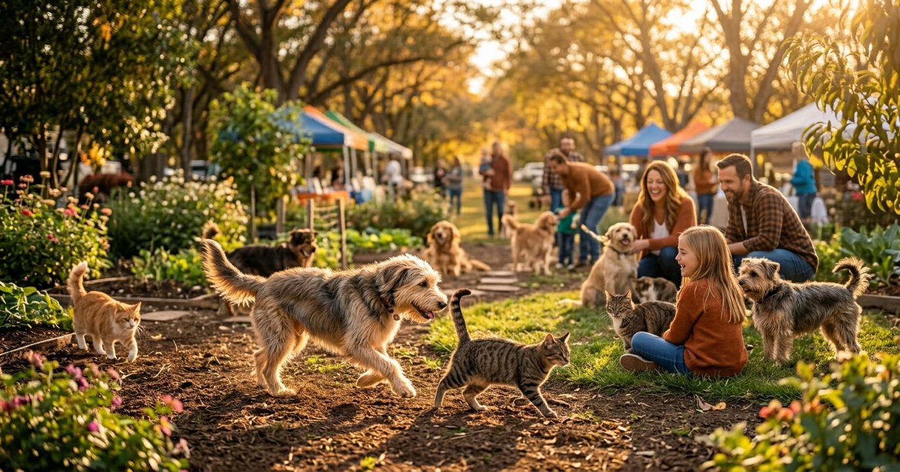
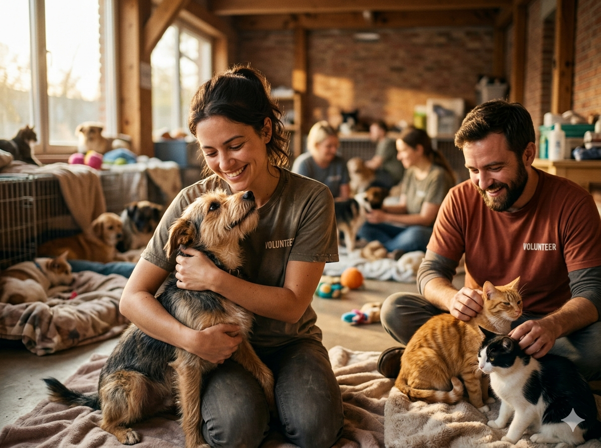

Rescatando vidas con amor 🐾
Rescatamos, cuidamos y encontramos un hogar lleno de amor para cada animalito que lo necesita.


Rescatando vidas con amor 🐾

Nuestros voluntarios en acción ❤️

Historias de adopción que inspiran 🏠

Atención veterinaria con dedicación 🩺

Cada gatito merece un hogar 🐱

Unidos por los animales 🌟

Felices y libres gracias a ti 🌈

Somos una fundación sin ánimo de lucro comprometida con el bienestar animal. Desde 2015 trabajamos incansablemente para rescatar animales en situación de calle, brindarles atención veterinaria y encontrarles una familia amorosa.
Creemos que cada animal merece una segunda oportunidad y trabajamos cada día para hacerlo posible.
Rescatar, rehabilitar y reubicar animales en situación de vulnerabilidad, promoviendo la adopción responsable y la educación sobre el bienestar animal en nuestra comunidad.
Ser la fundación de referencia en rescate animal de la región, construyendo una comunidad consciente donde ningún animal sufra el abandono ni el maltrato.
Amor, respeto, responsabilidad y compromiso guían cada una de nuestras acciones hacia los animales y hacia las familias que confían en nosotros.